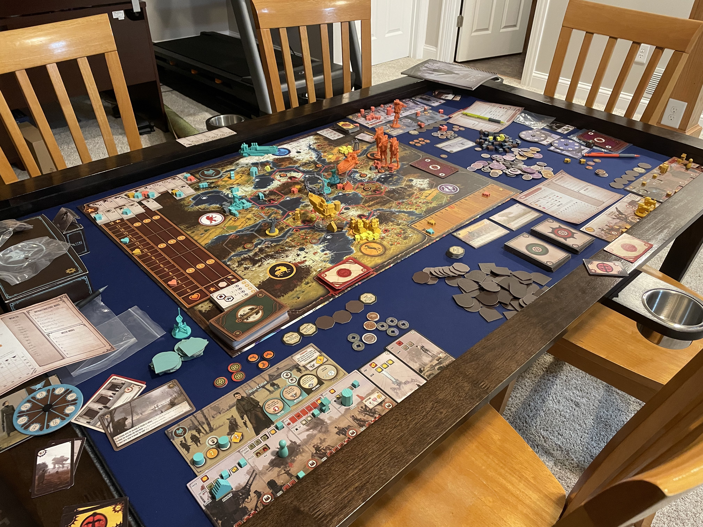

Since the rest of this website is focused on engineering, I made this about page to
showcase some of my other interests.
Quizbowl
The best way I can describe Quizbowl is that it's like Jeopardy but with teams. It's a trivia competition in which two teams of four players compete in categories
ranging from chemistry, fine arts, literature, history, etc. At the college level, schools will travel to and compete against each other. It's a great way to get exposure to all kinds of things that have made an impact on
the world as we know it today, and a great way to meet some new friends. My specialties include paintings and sculptures, mythology, and some science.
I've spent more time learning about Norse Mythology than I care to admit.
(Purdue's Quizbowl team after the ACF Fall competition in 2022)
Art History
My interest in art history started from my exposure to it from Quizbowl, and after taking a few classes in the subject at Purdue, I decided to pursue a minor in it.
There is also a surprising amount of science and engineering in art history, especially concerning the restoration and preservation of works of art.
Pictured on the right is a machine that analyzes the vibrations caused by people moving or talking, ambient air movements, etc. in order to create a way to display
the painting in a way that better protects it from these vibrations.
(Rembrandt's The Night Watch in the Rijksmuseum, Amsterdam)
Rock Climbing
I started rock climbing in September 2023, and instantly fell in love with it. The combination of the physical and puzzle solving elements just makes it feel extremely rewarding.
It's also a great form of exercise and the community is generally very friendly and supportive, no matter your skill level.
I tend to take breaks from it occaissionaly, but always come back to it with more drive than before.
(Photo of myself climbing "27 Years of Climbing" in the Red River Gorge, Kentucky)
Board Games
Throughout my life I've played nearly 200 unique board games. They're a great way to interact with people face to face and to keep my brain engaged.
I've even started making one of my own! Some of my favorites include: Everdell, Codenames, Dominion, and Scythe.

(The aftermath of the final game in Rise of Fenris Scythe campaign)
Hiking and Camping
I got introduced to the outdoors from a young age through cub scouts. I enjoyed it so much I continued with scouts until
my senior year of high school when I reached the rank of Eagle Scout. However, growing up in central Illinois, there wasn't much variety
in the nearby geographical features. Through college, I got to visit some more interesting places and it amazes me just how diverse out planet is.
(Photo of myself by cloud lake in the Upper Peninsula Michigan)
 (Photo of myself by cloud lake in the Upper Peninsula Michigan)
(Photo of myself by cloud lake in the Upper Peninsula Michigan)